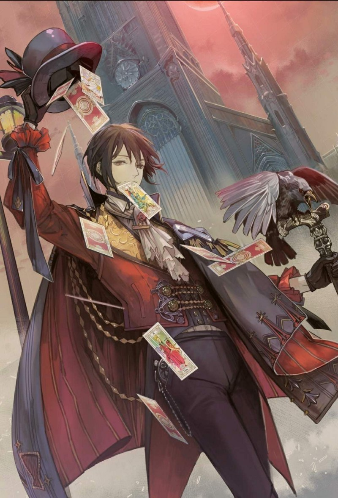
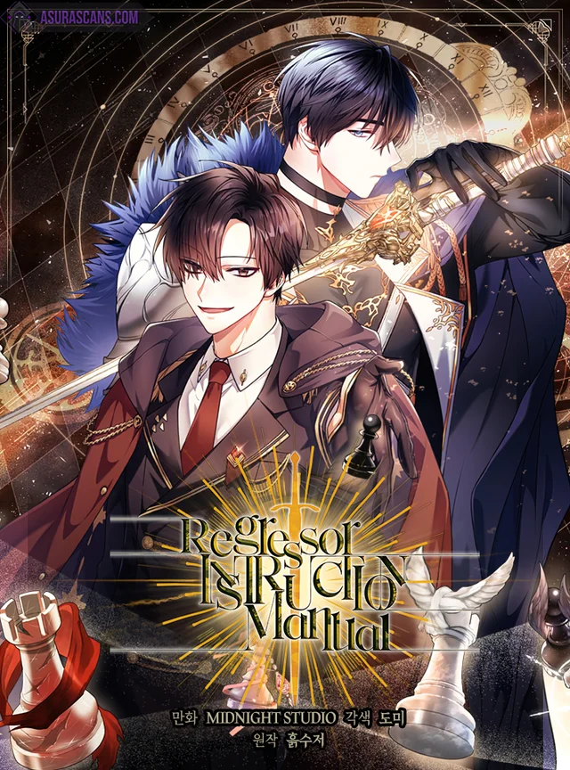
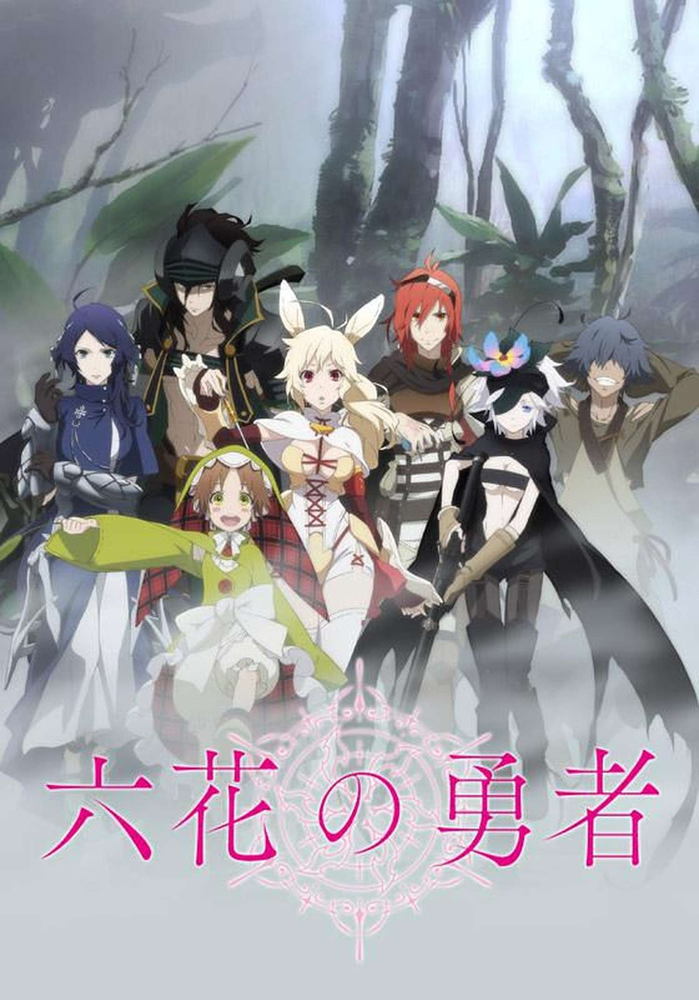
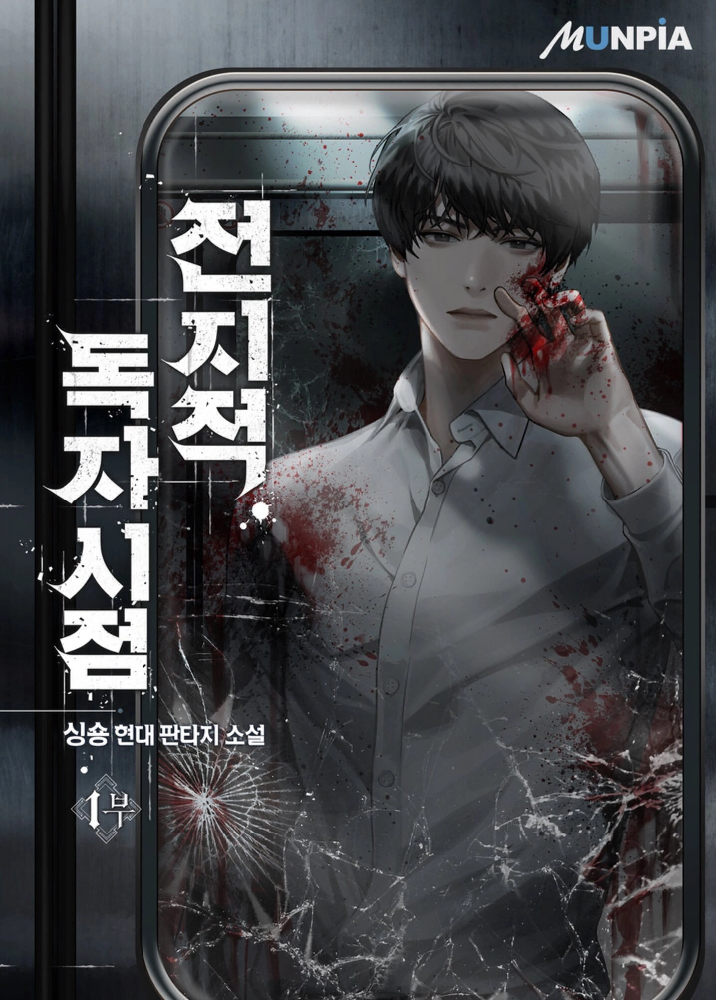
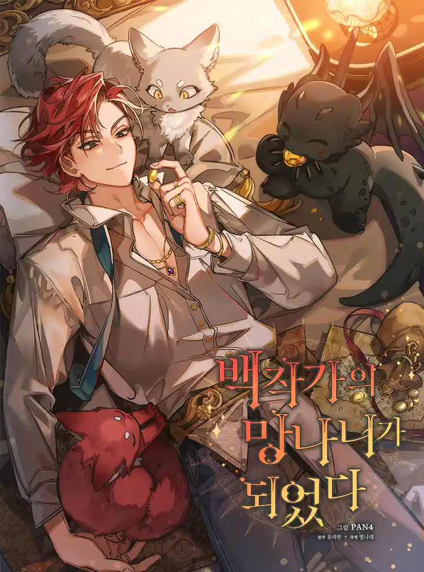
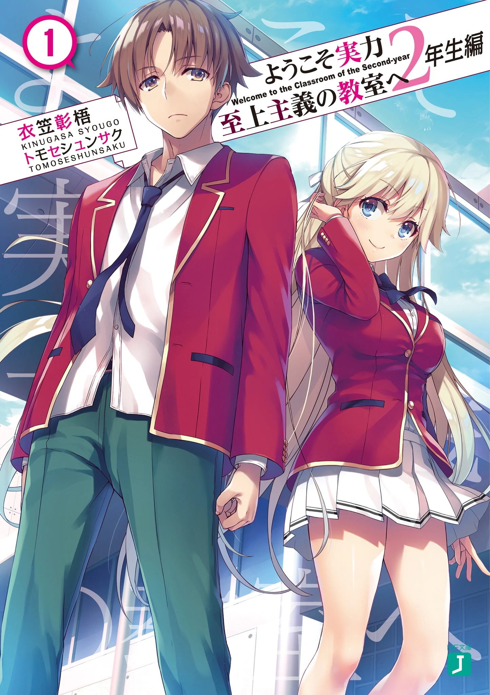
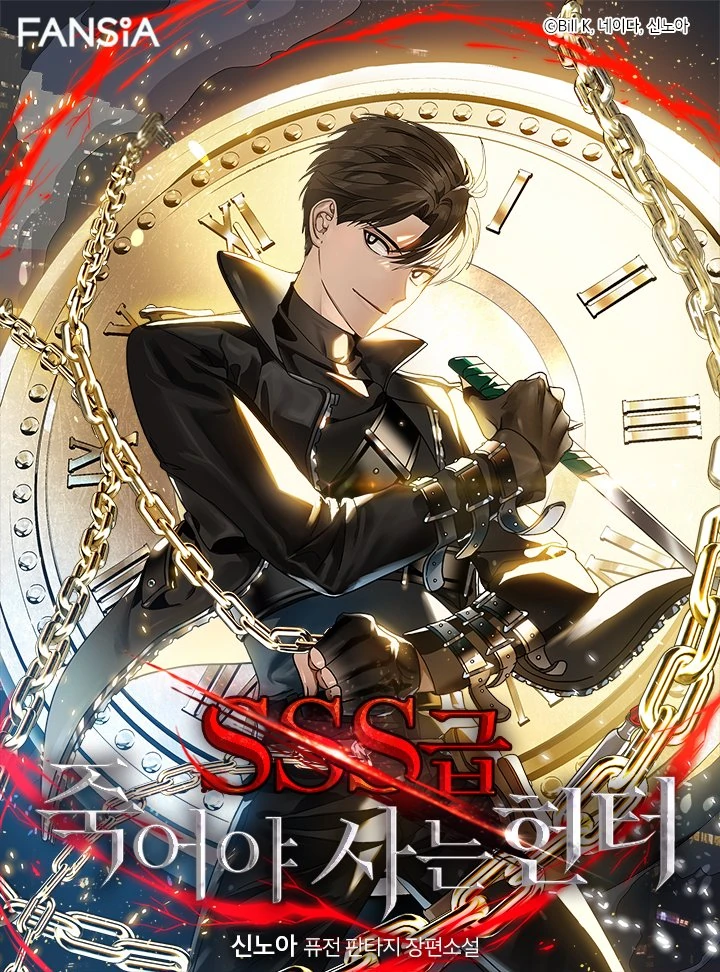

SAM
I am Sam.
I like a lot of things and I have too many interests. Some of them are: cats, webcomics, novels, drawing, 3d modeling, soccer, swimming, guitar, procrastinating, binging shows instead of doing hw, ice skating, cookie clicking, icecream, boba and apple pie.
Novels I love

Lord of the Mysteries
This webnovel follows the story of Klein Moretti as he first arrives in the Steampunk world of Lord of the Mysteries, his becoming a Beyonder, and his adventures as a Nighthawk of Tingen City.

Regressor Instruction Manual
The plot of the novel revolves around a manipulative guy that is very weak but has the ability to see other people's statuses, and how he uses them to survive in this other world.

Rokka no Yuusha
Six people called the Braves of the Six Flowers are chosen by the Goddess of Fate to defeat the Demon God (魔神, Majin). However, when they gather, there are seven heroes present, leading them to believe that one is an impostor and on the side of the Demon God.

Omniscent Reader
“Omniscient Reader” tells the story of an ordinary businessman whose favorite comic has just come to life; as he grapples with his newfound reality, he tries to figure out how this happened in the first place. When the world is faced with destruction, only one man knows how it ends—because he is the Omniscient Reader.

Trash of the Count's Family
Kim Rok Soo wakes up and notices he is inside a novel. He is inside of the character Cale Henituse, who is the trash firstborn of a count family.

Classroom of the Elite
When Kiyotaka enters government-sponsored elite high school, he finds out just how merit-based this education system is. Koudo Ikusei Senior High School is a leading prestigious school with state-of-the-art facilities where nearly 100% of students go on to university or find employment.

SSS Class Revival Hunter
SSS-Class Revival Hunter is a Korean Web Novel by Shin Noah, following Kim Gongja as he becomes the titular SSS-Class Suicide Hunter, dying time and time again by his own hand and those of others in order to become the new greatest hunter of Earth and climb to the top of the mysterious Tower.